Ce que je photographie quand je n'ai personne à qui rendre l'image. Tokyo, New York, Paris, Tahiti, Écosse, Budapest. Un regard qui apprend à voir avant de cadrer.
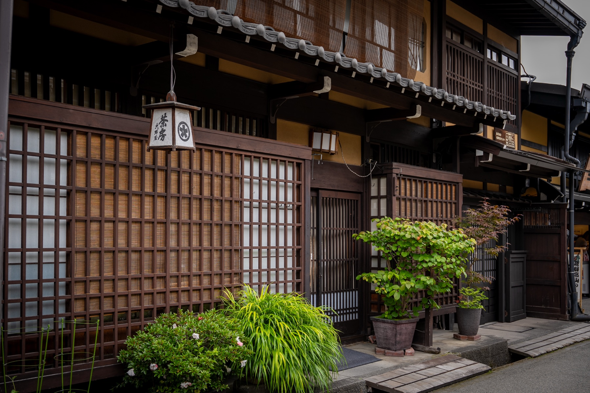
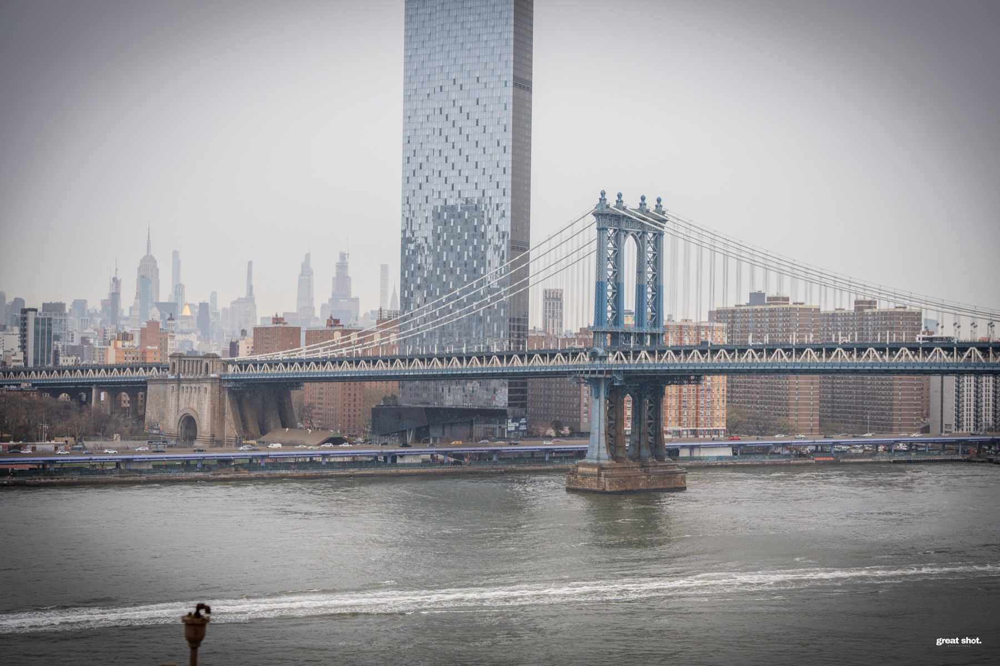
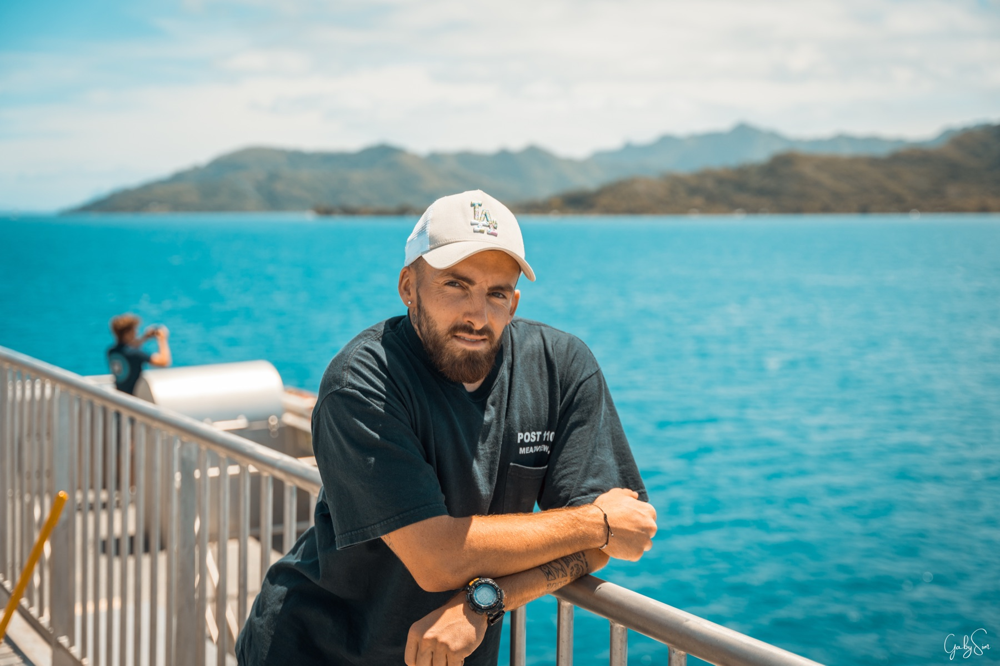
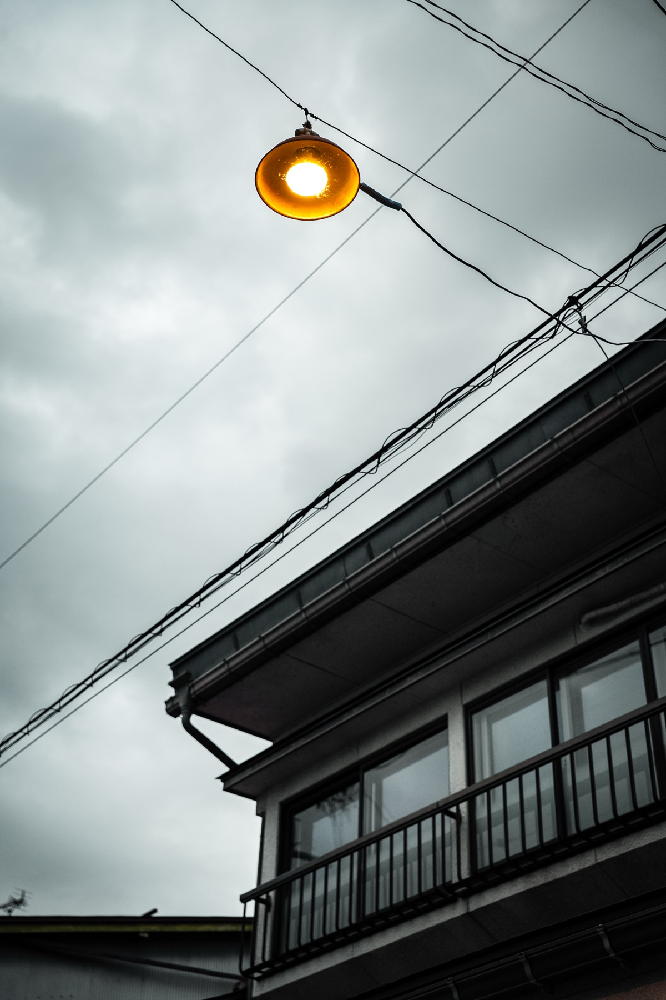
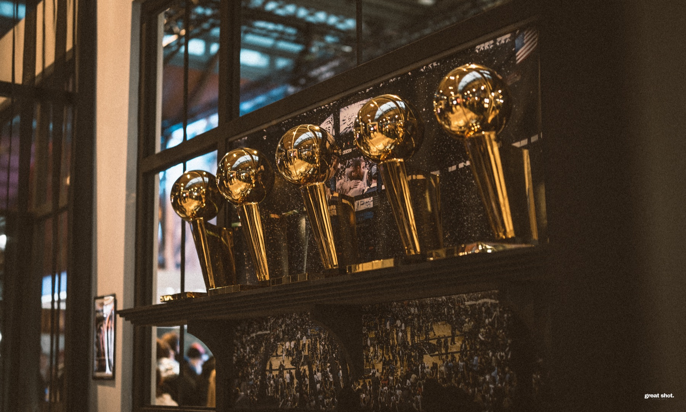
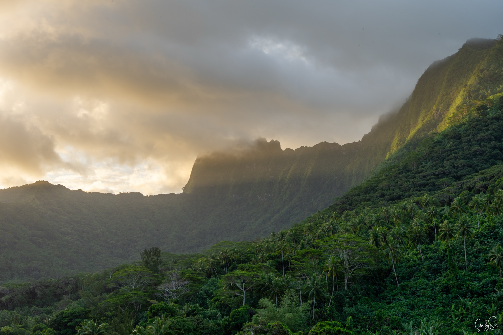
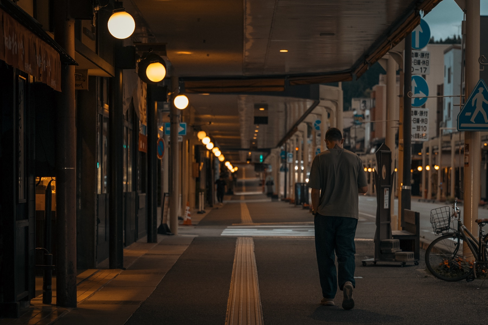
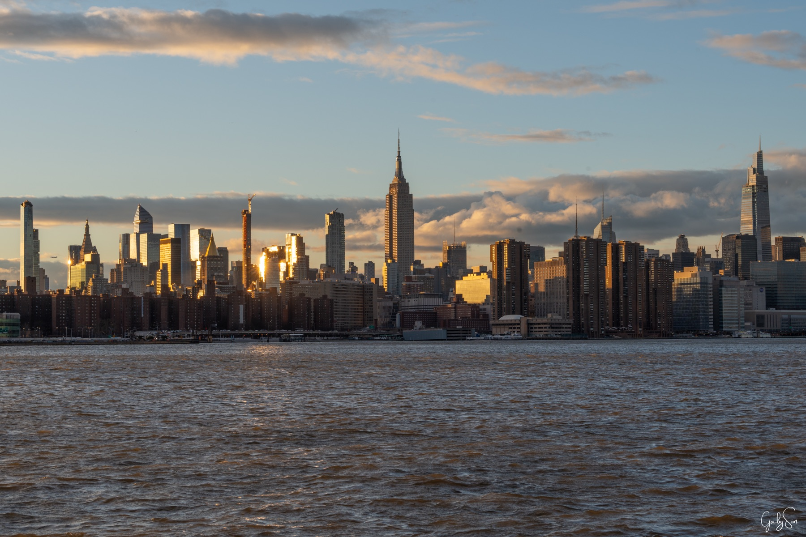
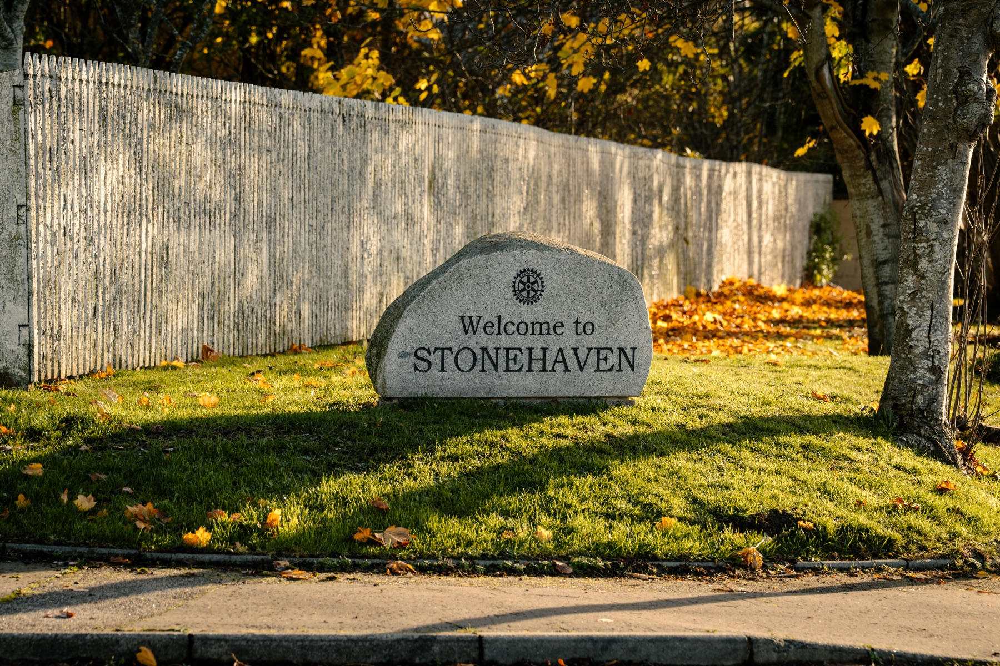
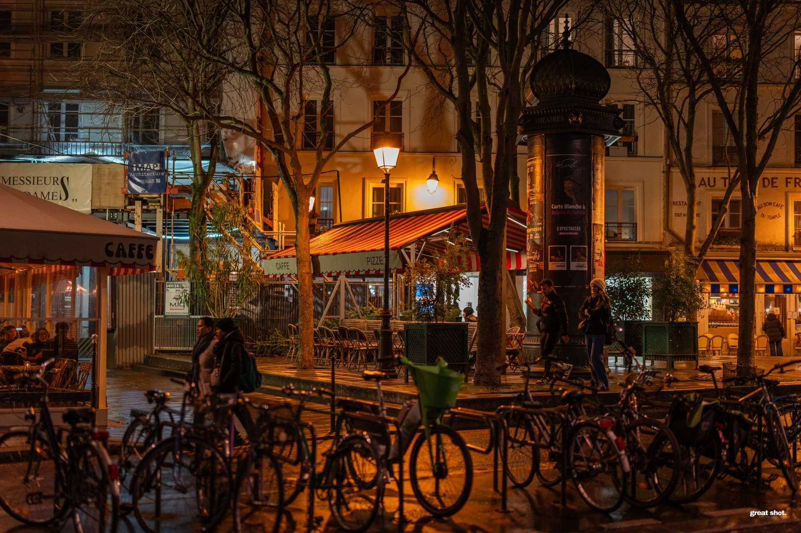
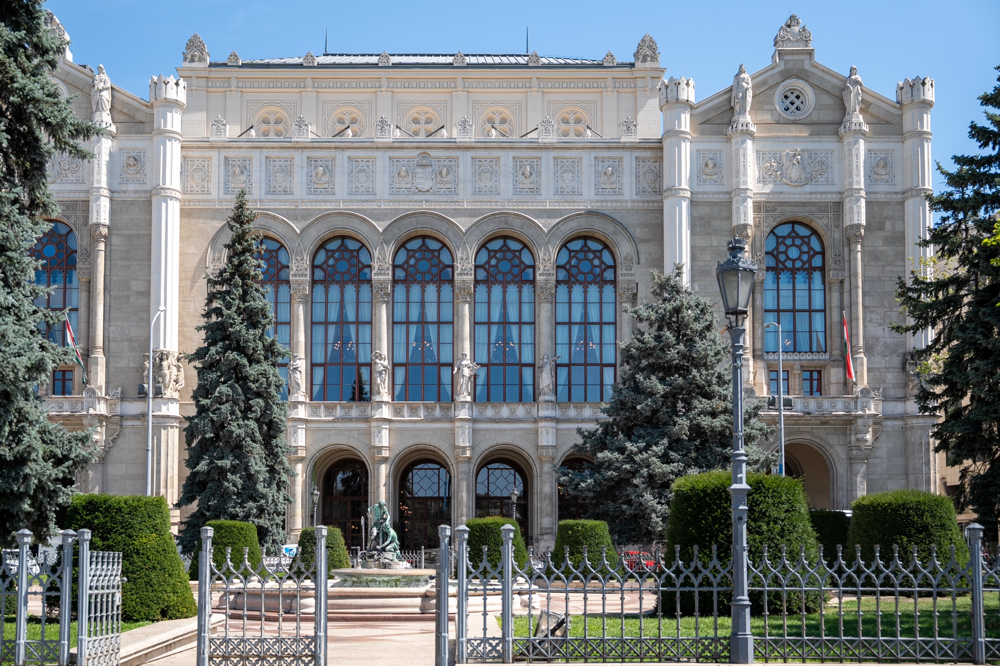
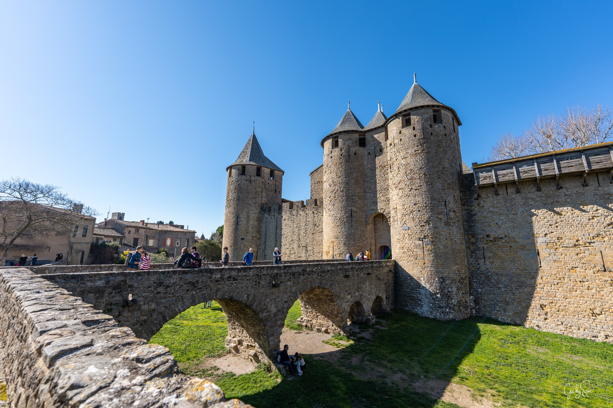
Événement, road trip, reportage éditorial. Devis sur mesure selon durée et destination.
Parler d'un projet voyage